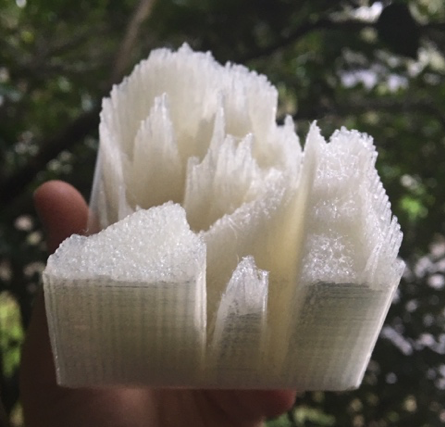
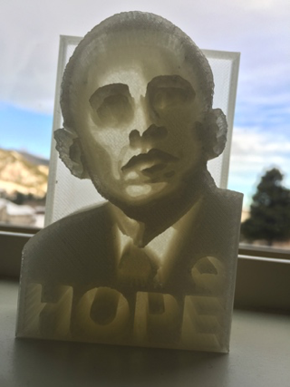
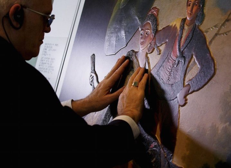
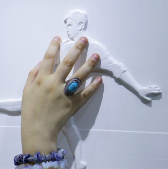

Making Hope:
Critical Making as a Multisensory Approach for 3D Printing Change
By Shannon Butts
Obama Hope is one of the most recognizable images produced in the 21st century. Featured on t-shirts, carved into pumpkins, printed on protest signs, and shared across a variety of digital platforms, Shepard Fairey’s graphic style poster was originally meant to raise support for a presidential candidate. However, Obama Hope’s bold colors, clean design, and viral circulation quickly made the image an icon and created a format easily remixed for protest, praise, or personal use. The digital technologies that helped the image “go viral” also provided unprecedented access, enabling people to remake the image to promote different ideas and rhetorical goals. Critics of Obama, for instance, replaced the “Hope” with “Dope” and shared satirical versions on platforms such as Twitter, Flickr, Facebook, and Reddit. More recently, Donald Trump’s election instigated several variations with his picture and the words “Grope” or “Nope,” and around the world, advocacy groups, political parties, and individuals continue to create countless versions of Obama Hope, each featuring new text or images to fit a different vision.
Such intense making and remaking of the Obama image illustrates that the power of Obama Hope stems not from an authoritative original, but the flexibility of the image - the "ability to transform in purpose, function, and form with each relation it enters into" (Gries 292). It also illustrates the participatory and embodied aspects of digital media. Digital images are more than just pixels on a screen. Every day, users interact with computers and mobile devices in visual, verbal, aural, haptic, tactile, and assorted other sensory ways. We swipe right to go on a date, use voice commands to Google questions, and track physical activity through wearables that rely on motion or gyroscopic input. As images and interfaces have grown increasingly more digital, scholars, artists, and designers have begun to engage bodies, materials, and technologies to theorize how we interact with visual data, reframing optic versions with embodied or sensory experiences. In New Philosophy for New Media, Mark Hansen draws attention to such experiences, arguing that bodies interact with digital images from “the entire process by which information is made perceivable through embodied experience” (10). What’s more, Hansen argues that these sensory experiences mean that a digitized image is not a fixed representation of reality but is defined by its complete flexibility and accessibility. The flexibility of new media enables viewers to become users that can access, remake, and circulate digital images, generating diverse embodied experiences across media platforms.
How we encounter digital images affects how we experience them. Seeing Obama Hope as a hanging collage in the National Portrait Gallery, or as part of a protest, differs from how we experience a digital version composed via Obamicon.me or a meme generator. Thus far in participatory culture, 2D digital images have dominated reproductions of Obama Hope. While productive for diversifying rhetorical messages across multiple contexts, technological practices that prioritize two dimensional versions of images also normalize how we experience images by privileging primarily optical interactions, which, in turn, limit how we come to know and see the world. What other technological practices might offer more accessible means of image making – a re-visioning that engages more diverse ways of understanding, seeing, and studying digital images? And how might digital visual studies cultivate other image-making methods that generate alternative ways to experience, sense, invent, access, etc. digital visual information?
In this chapter, I argue that 3D printing is a sense-making method that embraces difference as a site for rhetorical invention and encourages diverse ways of seeing and experiencing digital visual images. 3D technologies always start with an image. However, in modeling and printing visual data, the 3D process incorporates more than 2D optical information. The additive process of 3D printing builds up layers of material (heated plastic, powdered metal, wood chips, mud, etc.) to transform digital images into three-dimensional objects. This process, I argue, offers more diverse embodied ways of experiencing images and making sense of visual data. Thus, for this chapter, I experiment with critical making approaches and 3D printing technologies to create a 3D version of Obama Hope, an experiment that not only helps re-envision Obama Hope but also opens up more accessible approaches for doing digital visual studies.
Figures 1 & 2. 3D printed tactile lithophane of President Barack Obama and Obama Hope, from side and front.
In creating 3D prints of Obama Hope, I create a different experience of the image -- a way of seeing that is as much tactile as traditionally visual. This critical making experiment follows initiatives in many public institutions to try and make information more accessible using 3D technologies. Museums and galleries are full of three - dimensional objects, but most are seen only optically, the space traditionally a “DO NOT TOUCH” zone. However, many museums have expanded from an emphasis on preservation and collecting to education and experience – moving from the static and visual to the experiential and embodied (Pallasmaa). As a result, institutions are offering new types of access to artifacts and, at the same time, using emerging technologies to create more accessible experiences for a wider spectrum of visitors. Special tours offer interactive play projects for children, audio guides and downloadable applications provide multiple languages and additional information, and tactile interfaces and touch galleries offer different ways of seeing, sensing, and understanding information. 3D printing has especially become a popular means of diversifying experiences for the public. The Louvre, London’s National Gallery, Tate Museum, and New York’s Metropolitan Museum of Art all have touch-friendly 3D printing programs that enable visitors to experience sculptural works without relying on optical perception. Originally created for blind visitors, Madrid’s Museo Del Prado is even using 3D technologies to translate paintings into hands-on experiences (Halliday 2015).
Figure 3. Raised art at the Hoy toca el Prado exhibit (Come Touch the Prado) in Madrid, Spain. (Credit: Prado Museum).
For example, through a 3D “relief printing” technique called “Didú, the “Hoy toca el Prado” (Come Touch the Prado) exhibit in 2015 used a 3D scanner to map the brushstrokes of a painting and build a topography of the surface. Then, a 3D printer added texture and volume by slightly raising the surface to exaggerate height and depth, creating a tactile image that museumgoers could feel (Hewitt). Similarly, Brazilian photographer Gabriel Bonfim is using stereolithographic 3D printing to create three-dimensional photos that can be both seen and felt, a technique he calls “tactography” (Watkin). In 2014, Bonfim photographed classical singer Andrea Bocelli and his family. However, Bocelli is blind and was unable to see the photos. Bonfim explains that tactography came from trying to create a photo relief that Bocelli could “see,” a process of tinkering and critically making until he developed a way to address the lived experience of Bocelli. Experimenting with technologies and techniques, 3D prints offer a new level of accessibility and education regarding visuals, fostering a truly hands-on experience of art and images.
Figure 4. Tactography Image by Gabriel Bonfim (Credit: Bonfim Instagram).
Often, 3D inventions attempt to gain entry to an original form, what Walter Benjamin would term “the aura” of a text. In June 2014, for instance, Barack Obama became the first president to be 3D scanned and printed. Unlike traditional portraits, the 3D print of Obama is not a flat photo or artistic interpretation of a figure. Instead, the data driven process of 3D printing entailed taking “millions upon millions of measurements that create a 3D likeness of the President” (Metallo 2014). Obama’s three-dimensional ‘portrait’ resembles a presidential bust; standing 19 inches tall, weighing almost 13 pounds, it was created using visual data taken from over 80 photographs, light, and video scans tracing the exact cartography of the president’s head (Waibel). In mapping the planes of the president’s face, the 3D process provides access to visual information that might not be apparent on a screen - the contour of a brow ridge or the depth of wrinkles barely seen in a photograph. After converting the visual data into a digital model, the Smithsonian Digitization team printed the president’s head in just under 42 hours and displayed the unique portrait at the White House Maker Faire. The 3D print is now part of the presidential collection at the National Portrait Gallery, joining paintings, photographs, sculptures, life masks, and other work, including Shepard Fairey’s iconic poster, Obama Hope.
However, instead of trying to access an aura, 3D prints should be understood as more than an adaptation or copy of an original. 3D prints are different versions of an image altogether - different in form and function and separate versions in their own right. In A Version of Access, Casey Boyle and Nathaniel Rivers emphasize difference as a way to better engage accessibility and acknowledge the multiplicity of sensory experiences. Instead of approaching accessibility as gaining entrance to a static text, Boyle and Rivers explore what they call “multiple ontologies” – the many ways of processing and understanding texts (32). For example, rather than viewing closed captioning as an accessible copy of one text, Boyle and Rivers identify differences in design, composition, and medium and see the close captioning as a new version. More than a merely reproducing an image in its likeness, then, a 3D print ought to be understood as an ontologically distinct assemblage of visual data – different in design, composition, and medium.
In creating 3D prints of Obama Hope, I too make new, ontologically distinct versions of this iconic image by engaging in the methodology of critical making1. Critical making emphasizes process-driven projects that experiment with form to learn more about an idea or object and encourage critical reflection about social matters. By designing and making 3D versions of Obama Hope, I show how a critical approach to 3D printing can diversify the invention process of making and open up new research approaches for digital visual studies. But more specifically, I aim to demonstrate how critical making can foreground difference to create an alternative way of seeing digital visual images, not just for people with disabilities but for everyone who experiences the object--a way of seeing that is as much tactile as traditionally visual. Garnet Hertz describes critical making as a process that creates “things to think with” (5). Here, I discuss and model how 3D printing creates “things to see with” and thus offers digital visual studies as a productive method for invigorating not just access but also accessibility to digital visual images.
To show how 3D printing can encourage such approaches to digital visual studies, this chapter begins with a theoretical explication of digital difference, accessibility, and embodied experience. I then discuss how critical making reframes doing digital visual studies – an approach that considers making as a tactile act of rhetorical invention. I then move to 3D printing and accessibility. Advances in technology have made 3D printing more available, but how has 3D printing participated in creating different, more accessible types of visual experiences? Finally, I demonstrate how 3D printing Obama Hope draws on the flexibility of digital images to create new versions and a new vision of accessibility. I emphasize, in particular, how critically tinkering with the Obama Hope through 3D printing enables embodied experiences that use “more than” optic sensors to make sense of visual data. In addition to discussing 3D printing and its affordances for digital visual studies, I also include photos and videos of my own making process and, in the appendix, invite readers to participate in the critical work of transforming visual images into 3D models and material objects. Building on what Jentry Sayers calls a ‘tinker-centric pedagogy,’ readers have the opportunity to engage critical making and discover how to contribute to communities of 3D models. I especially encourage making your own 3D printed versions of digital images to develop your own conclusions and better understand the tools, technologies, and diverse experiences that come with critical making.
I would like to note that while my work draws upon visual studies, writing studies, disability studies, and science and technology studies to open up new means of access and accessibility for diverse bodies, I am not advocating 3D printing or critical making as a cure all for issues of accessibility. Nor am I ignoring the many visual components of 3D technologies. Instead, I offer a research approach that is more than just visual – a methodology that uses difference productively to emphasize how emerging technological practices such as 3D printing can help scholars and designers generate embodied ways of sense-making that are beneficial to diverse bodies – regardless of their visual abilities. In prioritizing difference and using a “more than” approach, I hope to create opportunities for others to discover new versions of access, and their own meanings, through critical making. In making, tinkering, and overall – just doing it – we practice rhetorical invention and learn through the embodied, lived experience of doing digital visual study.
1. While Matt Ratto originally described critical making as a pedagogical practice, scholars have adopted critical making as a method and methodology – a theory for guiding making that draws from constructivist and design methodologies to create a balanced approach the analysis and production of knowledge.↩